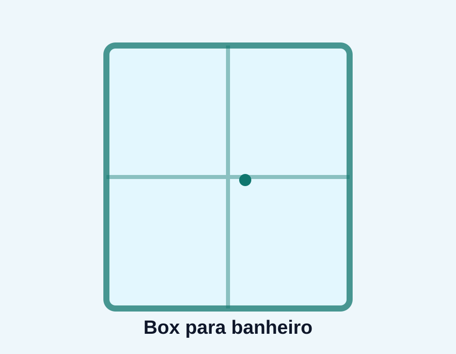
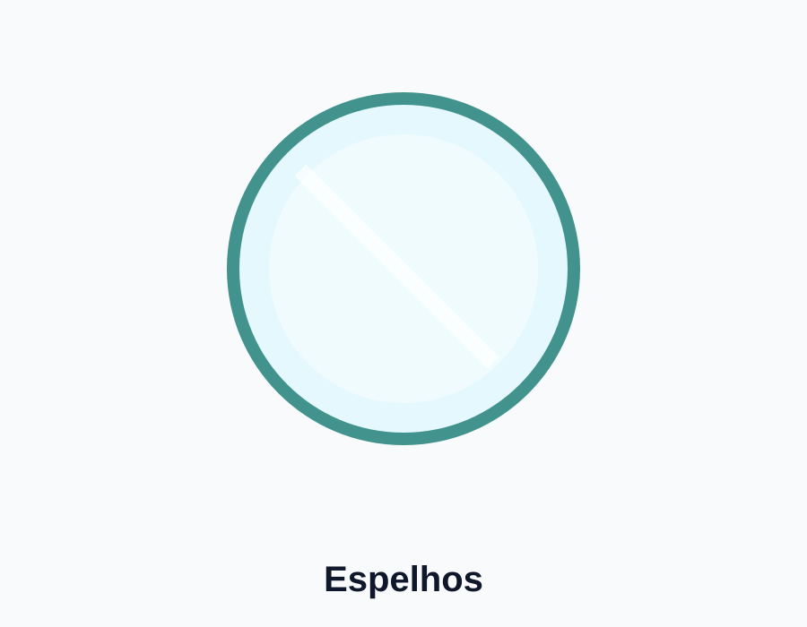
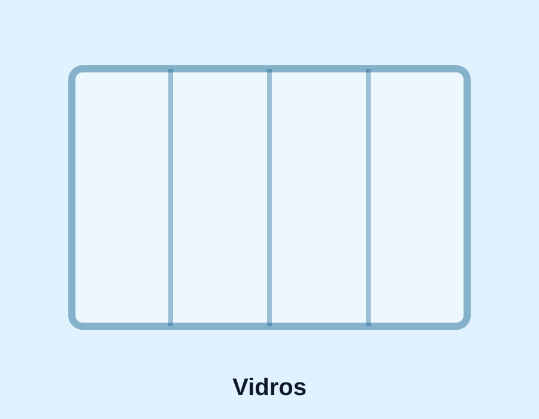

Box para banheiro
Soluções em vidro para banheiros, com foco em acabamento, funcionalidade e segurança.
São Bernardo do Campo e região
Vidros, espelhos e box sob medida para sua obra, reforma ou instalação.
Atendimento direto pelo WhatsApp para orçamento, medição e instalação com praticidade.
Nossos serviços
Atendimento para instalação, troca, acabamento e projetos sob medida.

Soluções em vidro para banheiros, com foco em acabamento, funcionalidade e segurança.

Espelhos sob medida para banheiros, salas, quartos, comércios e ambientes planejados.

Instalações com vidro temperado para portas, divisórias, janelas e projetos especiais.

Mais privacidade e acabamento visual para portas, divisórias e ambientes internos.

Opções de vidro laminado para projetos que exigem proteção, resistência e conforto.

Colocação em geral, ajustes, acabamentos e soluções para diferentes necessidades.
Sobre a Via Vidros
A Via Vidros Ricardo Silva atende clientes em São Bernardo do Campo e região, oferecendo soluções em vidros, espelhos, box, molduras e instalações sob medida.
O objetivo é facilitar o orçamento e orientar o cliente de forma simples: envie uma foto, explique a necessidade e receba o direcionamento para o serviço.
Galeria
Espaço reservado para fotos reais dos serviços realizados. As imagens finais serão adicionadas após seleção do material.
Por que escolher
Contato rápido pelo WhatsApp para entender sua necessidade.
Soluções pensadas para valorizar o ambiente.
São Bernardo do Campo e região do ABC.
Fale com a Via Vidros
Envie uma mensagem pelo WhatsApp e explique o que precisa. Se possível, mande fotos ou medidas do local.
WhatsApp: (11) 96793-9262
Instagram: @viavidroscomercio
Atendimento: São Bernardo do Campo e região
Serviços: vidros, espelhos, box, molduras e colocação em geral